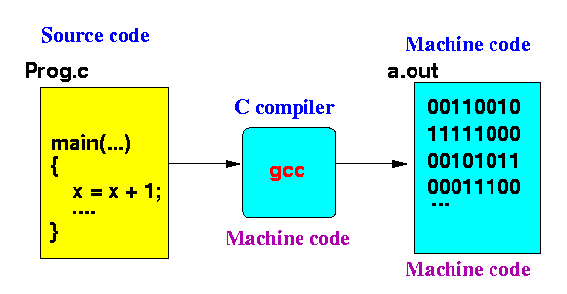

- Schematically,
the things in
a Java program can be
represented by
the following
diagram:

At the top level, you will see the following constructs in a Java program:
- A Java program consist of
one or more classes
- A class contains:
- One or more instance/class variables
- One or more functions (= methods)
- A Java program consist of
one or more classes
- Important property
of Object Oriented Programming Languages:
- The class construct
in OOP (Object Oriented Programming) languages
can restrict the
access of
instance/class variables by
methods in other classes
Example:

Methods in class2 cannot access a private variable in another class !!!
- The class construct
in OOP (Object Oriented Programming) languages
can restrict the
access of
instance/class variables by
methods in other classes
- Data abstraction:
- Since the main( )
function is usually in a
seperate class:
- The private variables
defined in a user-defined class is
inaccessible to
the program statements
in the main( ) function.
I.e.: you can't access the private variables in a class directly using for example:
objVar.privateVarName = ....in main( ).
So these private variables are hidden from the programmer that write the main( ) program....
They call this information hiding by a fancy term:
- Data abstraction
- The private variables
defined in a user-defined class is
inaccessible to
the program statements
in the main( ) function.
- Since the main( )
function is usually in a
seperate class:
- Fact:
- C does not provide any mechanism to associate data (variables) and code (methods/functions)
What this mean is:
- C does not have the class construct that you can use to hide some variables from being access by functions in another class
- Structure of a C program:
- A C program consists of a
collection of
- Data structures/types definitions
- (Global) variables
- Functions (with local variables and statements)
stored in one or more files.
Schematically:

- A C program consists of a
collection of
- C does not
provide access protection
in things:

A function can access any variable that is defined outside a function
-
Note:
- A later revision of
the C programming language (C99)
has added a
construct
(static globals) to
limit the
accessibility of
global variables
We will discuss this later in scoping rules
- A later revision of
the C programming language (C99)
has added a
construct
(static globals) to
limit the
accessibility of
global variables
- Historical note:
- What we now call a method,
was traditionally called:
- a subroutine (or subprogram), or
- a procedure, or
- a function
- What we now call a method,
was traditionally called:
- Personal practice:
- In this course, I was use function instead of method because that's still the common practice in C.
- The start of the execution
of a C program:
- The execution of a C program begins with the main() function
- The Hello World program in C:
#include <stdio.h> int main( int argc, char* argv[] ) { printf( "Hello World !\n" ); }
- Example Program:
(Demo above code)

- Prog file: click here
How to run the program:
- Right click on link and
save in a scratch directory
- To compile: gcc hello.c (output file is named a.out)
- To run: ./a.out
Or:
- Right click on link and
save in a scratch directory
- To compile: gcc -o hello hello.c (option -o renames output file to hello)
- To run: ./hello
- Explantion:
- #include <stdio.h>
- The # symbol
starts a command for the
C pre-processor
- The #include
command instructs
the C pre-processor to
read in the file
stdio.h
from the System include directory
(this is traditionally the directory:
/usr/include)
- The file
stdio.h
(/usr/include/stdio.h) is
C's
standard IO include file
This file contains constant and variable definitions to allow C programs to perform commonly used input/output operations.
Take a look at the file /usr/include/stdio.h....
- The # symbol
starts a command for the
C pre-processor
- int main( int argc, char* argv[] )
- This line is the header of the
definition of the main()
function
- The function main()
will return an integer error code
(may be used by a shell script to check for the outcome)
- The parameters of main()
are:
int argc = number of parameter strings char* argv[] = array of String argv[0] = first argument argv[1] = second argument ... argv[argc-1] = last argument
- This line is the header of the
definition of the main()
function
- printf("Hello World !\n");
- This is the statement inside the
body of the
main()
function
- printf is the C library function to print outputs to the terminal
- This is the statement inside the
body of the
main()
function
- #include <stdio.h>
- Some terminilogy used in C:
- stdio.h = header file
containing definitions for the
standard Input/Output operations
- stdin = the
name of the
standard input device
(which is the keyboard)
- stdout = the name of the standard output device (which is the screen or terminal)
- stdio.h = header file
containing definitions for the
standard Input/Output operations
- Fact:
- Unlike Java, the C compiler translates the C program source code into machine executable instructions (code)
- This is the process used to
compile and
then run a
Java program:
- Compile the Java source code
using a Java compiler
(javac
(output is a file containing
Java byte code -
instruction code for a virtual machine)
- Execute the Java source code
using a Java byte code
interpreter (java)
(execution may generate output to the terminal or file(s)).
- Compile the Java source code
using a Java compiler
(javac
(output is a file containing
Java byte code -
instruction code for a virtual machine)
- This is the process used to
compile and
then run a
C program:
- Compile the C source code
using a C compiler
(gcc
(output is a file containing
machine executable code -
instruction code for a actual computer !!!)

- Execute the machine code
directly by the
computer:
(execution may generate output to the terminal or file(s)).
- Compile the C source code
using a C compiler
(gcc
(output is a file containing
machine executable code -
instruction code for a actual computer !!!)
- Facts:
- Interpretation (executing code
using an interpreter) is
very inefficient.
- Due to the fact that C program source is translated machine code, C programs run multiple times (at least 10) faster than Java programs.
- Interpretation (executing code
using an interpreter) is
very inefficient.